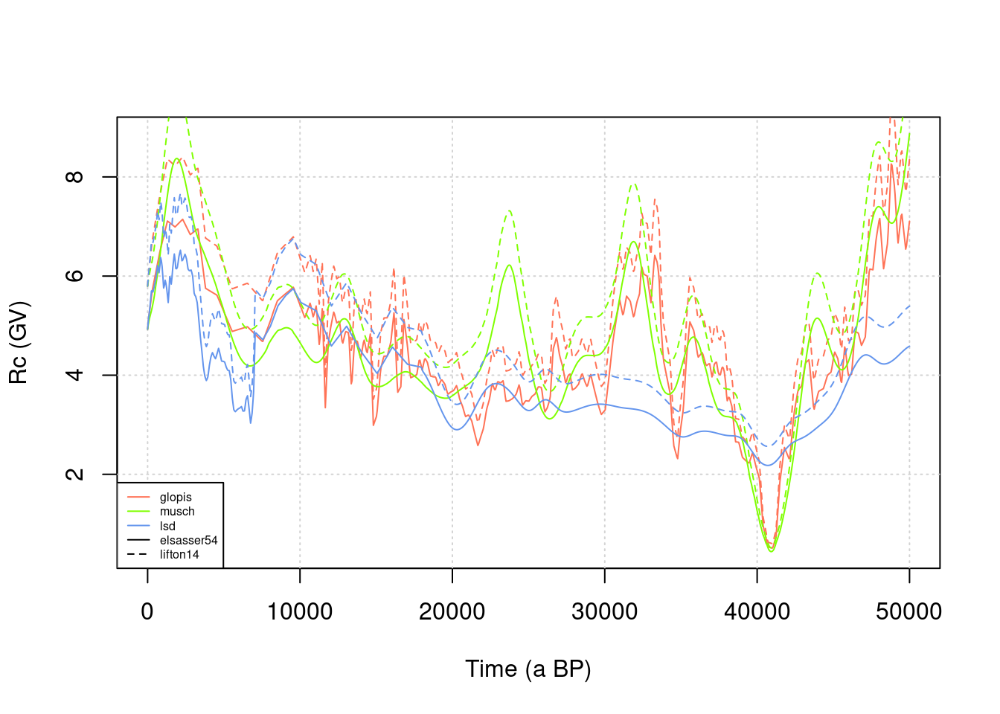
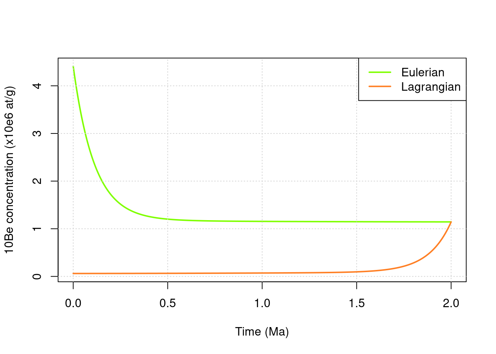

3 Scaling factors
First we are going to explore how the scaling factors are changing with elevation, latitude and time, and what is the impact on local production rates.
3.1 Time-independent scaling
We are going to present the most widely used and simplest scaling scheme known as Lal-Stone and often abbreviated as st. The main equations are presented in the reference article by Stone (2000) .
3.1.1 Site characteristics
We first need to define some parameters concerning the site of interest :
- latitude
latin degrees - altitude
zin meters (can be a vector or a scalar) - longitude
lonin degrees, this is not used for st scaling (Stone (2000)), just in case we want to compute atmospheric pressure according to ERA40 (Uppala et al. (2005)).
lat = 30 # latitude
lon = 30 # longitude
z = seq(0,3000,by=100) # vector from 0 to 3000 m by 100 m incrementsNow we can compute the atmospheric pressure, with the function atm_pressure according to the two models available, and then plot for comparison.
Here z is a vector to see the variations over a range of elevations.
To get information about the usage of the function used here (for example what are the different models) type ?atm_pressure in the R console.
P1 = atm_pressure(alt=z,model="stone2000")
P2 = atm_pressure(alt=z,lat=lat,lon=lon,model="era40")
plot(P1,z,type="l",xlab="Pressure (hPa)",ylab="Altitude (m)",col="darkorange3")
lines(P2,z,lty=2,col="darkorange3")
legend("topright",c("Stone 2000","ERA40"),lty=c(1,2))
TODO Modify
latandlonto see the effects on the pressure computed with the ERA40 model
3.1.2 Computation of scaling factors
We can now compute the scaling factors according to Stone (2000).
Same as above, to get some information about the function (parameters definition) type ?st_scaling in the R console.
st = scaling_st(P1,lat) # here we use the pressure according to Stone 2000 model
print(st)## Nneutrons Nmuons
## 1 0.8300224 0.8330000
## 2 0.9026631 0.8751951
## 3 0.9789258 0.9190924
## 4 1.0593995 0.9647381
## 5 1.1446610 1.0121787
## 6 1.2352759 1.0614606
## 7 1.3317993 1.1126307
## 8 1.4347771 1.1657357
## 9 1.5447466 1.2208226
## 10 1.6622372 1.2779383
## 11 1.7877718 1.3371297
## 12 1.9218669 1.3984436
## 13 2.0650339 1.4619266
## 14 2.2177794 1.5276253
## 15 2.3806062 1.5955858
## 16 2.5540138 1.6658541
## 17 2.7384989 1.7384759
## 18 2.9345563 1.8134963
## 19 3.1426788 1.8909602
## 20 3.3633586 1.9709117
## 21 3.5970868 2.0533946
## 22 3.8443547 2.1384521
## 23 4.1056535 2.2261264
## 24 4.3814748 2.3164594
## 25 4.6723113 2.4094921
## 26 4.9786564 2.5052644
## 27 5.3010052 2.6038156
## 28 5.6398539 2.7051842
## 29 5.9957004 2.8094072
## 30 6.3690443 2.9165212
## 31 6.7603872 3.0265612The result is stored in st as a dataframe with as many rows as there are elements in the input pressure vector (P1) and two columns named Nneutrons and Nmuons, for the spallogenic and muogenic contributions, respectively.
We can plot the evolution with elevation, which illustrates the major influence of altitude of the sampling site in controlling the local production rate.
plot(st$Nneutrons,z,type="l",
xlab="Spallogenic st scaling factor (Stone 2000)",ylab="Altitude (m)",
main=paste("Latitude ",lat,"°",sep=""),col="darkorange3")
TODO Modify
latto see the effects on the scaling factor
3.1.3 Global variations
In order to get a better idea of the variations with both latitude (from 0 to 90°) and elevation (from sea level to 3000 m) we can try the following plot.
P = atm_pressure(alt=0,model="stone2000") # compute pressure
lat = seq(0,90,by=1) # latitude vector
n = length(lat) # size of vector
st = scaling_st(P,lat) # compute scaling
plot(lat,st$Nneutrons,type="l",ylim=c(0.5,12),col="darkorange3",
xlab="Latitude (°)",ylab="Spallogenic st scaling factor (Stone 2000)")
grid()
text(lat[n],st$Nneutrons[n],"0 km",cex=0.5,adj=0) # put label at the end of curve
for (z in seq(500,3000,by=500)){ # loop on elevations : same as above for a range of elevations
P = atm_pressure(alt=z,model="stone2000")
st = scaling_st(P,lat)
lines(lat,st$Nneutrons,col="darkorange3")
text(lat[n],st$Nneutrons[n],z/1000,cex=0.5,adj=0)
}
This dependence of the scaling factor on latitude is a direct consequence of the dipole structure of the Earth magnetic field, with a higher cosmic rays flux at high latitudes.
3.2 Time-dependent scalings
3.2.1 Definition of paleomagnetic variations
Time-dependent scaling factors allow to take into account the variations through time of the Earth magnetic field, which modulates the incoming cosmic ray flux. This is particularly important in exposure dating applications.
3.2.1.1 Virtual Dipole Moment
We need to first define a time series for the Virtual Dipole Moment (VDM) variation, using the get_vdm function.
Several paleomagnetic database can be used. The three options correspond to databases defined in Crep. We plot the three of them on the same graph.
time = seq(0,50e3,length.out = 1000) # time vector from 0 to 50 ka BP, with 1000 regularly spaced elements
#
plot(NA,xlim=range(time),ylim=c(0,16),xlab="Time (a BP)",ylab="VDM (10^22 A.m^2)")
grid()
# - Glopis
col1="coral1"
vdm1=get_vdm(time,model="glopis")
lines(time,vdm1/1e22,col=col1)
# 2 - Musch
col2 = "chartreuse"
vdm2=get_vdm(time,model="musch")
lines(time,vdm2/1e22,col=col2)
# 3 - lsd
col3 = "cornflowerblue"
vdm3=get_vdm(time,model="lsd")
lines(time,vdm3/1e22,col=col3)
legend("topright",c("glopis","musch","lsd"),col=c(col1,col2,col3),lty=1)
3.2.1.2 Cutoff Rigidity
Now we need to convert that into cutoff rigidity using vdm2rc function.
Such can be done using the following expression (Martin et al. (2017)): \[R_c = 14.3 \frac{M}{M_0}\cos^4 \lambda,\] where \(M\) is the moment of the Earth dipole field, \(M_0\) the 2010 reference value for \(M\) and \(\lambda\) the latitude.
This corresponds to the default model=elsasser54 in the vdm2rc function arguments.
A more complex formula proposed by Lifton, Sato, and Dunai (2014) can be used with model=lifton14.
lat = 40
rc1a = vdm2rc(vdm1,lat)
rc1b = vdm2rc(vdm1,lat,model="lifton14")
rc2a = vdm2rc(vdm2,lat)
rc2b = vdm2rc(vdm2,lat,model="lifton14")
rc3a = vdm2rc(vdm3,lat)
rc3b = vdm2rc(vdm3,lat,model="lifton14")
#
plot(NA,xlim=range(time),ylim=range(rc1a,rc2a,na.omit(rc3a)),xlab="Time (a BP)",ylab="Rc (GV)")
grid()
lines(time,rc1a,col=col1)
lines(time,rc1b,col=col1,lty=2)
lines(time,rc2a,col=col2)
lines(time,rc2b,col=col2,lty=2)
lines(time,rc3a,col=col3)
lines(time,rc3b,col=col3,lty=2)
legend("bottomleft",c("glopis","musch","lsd","elsasser54","lifton14"),col=c(col1,col2,col3,"black","black"),lty=c(1,1,1,1,2),cex=0.5)
TODO change the latitude
latand observe the influence on \(R_c\)
3.2.2 Lal/Stone modified scaling (lm)
Once we have a \(R_c\) time series we can compute the lm scaling factors using the scaling_lm function.
For that we will only use one elevation (z=0), so we recompute the atmospheric pressure.
We plot the corresponding time series, as well as the value of st scaling factor for reference.
P = atm_pressure(alt=0,model="stone2000")
lm = scaling_lm(P,rc1a)
plot(time,lm,type="l",xlab="Time (a BP)",ylab="Spallogenic lm scaling factor")
abline(h=scaling_st(P,lat)$Nneutrons,lty=2)
TODO Explore the variations of the scaling factor by using various values for elevation
alt, and different \(R_c\) time-series. Look for the differences with the time-independantstscaling